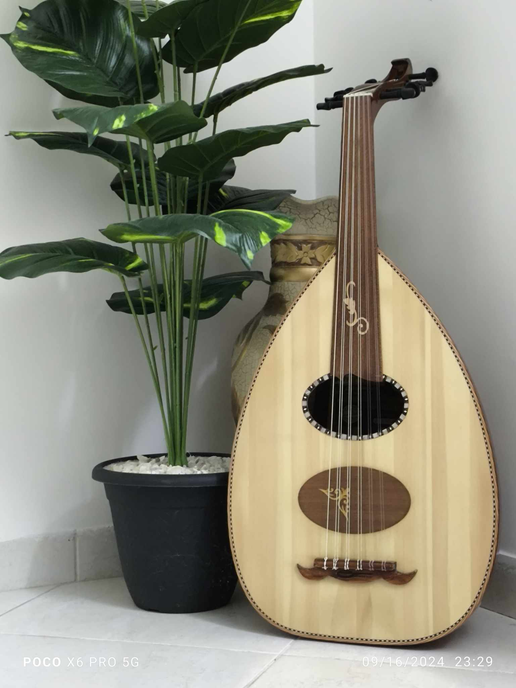
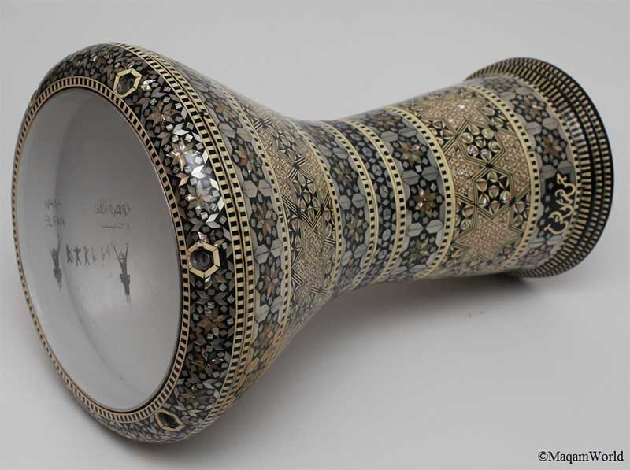
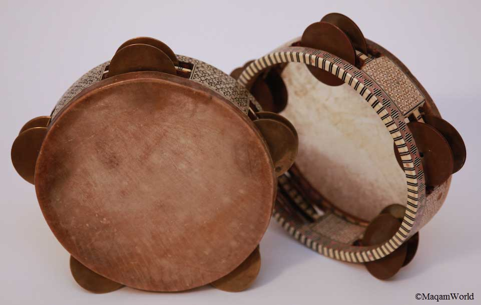

Hobbies:
-
Music
- Oud
- Goblet drum
- Riq



- Photography
- Writing
At the end of this article, I would like to talk about what I want to become in the future. I really don’t know, maybe it, depends on my university major or one of my hobbies, or maybe a third possibility that only God knows, but I am sure that I will be great and influential throughout my entire life.